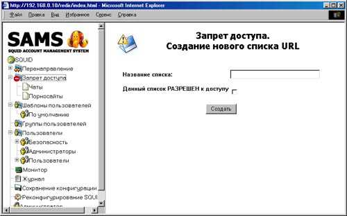
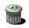

! Импортируемый список должен представлять из себя текстовый файл, содержащий в себе URL, разделенные символом перевода строки

Запрет доступа пользователей к нежелательным URL может быть осуществлен одним из способов:
1. Встроенный SQUID (с помощью ACL SQUID). На основе списков запрета
доступа SAMS создает ACL для SQUID и SQUID сам проверяет права доступа пользователя к URL...
Скрипт редиректора создается согласно документации на SQUID (на языке Перл).
Говорят, что при нескольких десятках тысяч URL в списках SQUID начинает глючить...
2. SAMS. Редиректор непосредственно общается с базой в MySQL, за счет этого при большом
количестве одновременных запросов может быть некоторое торможение.
3. SquidGuard.Мощный редиректор с большой собственной базой URL.
Правила составления URL
Можно вводить как URL целиком:
anekdot.ru
так и при помощи регулярных выражений PERL:
Правила внесения хостов в список "Локальные домены"
В список локальные домены вносятся как ip адреса так и URL доменов.
Если в настройках выставлен соответствующий флаг, возможно при обработке логов производить
преобразование URL в IP адреса.
Таким образом, можно задать диапазон ip адресов, неподлежащих учету, далее при обработке логов,
парсер будет проверять, попадает данный URL в диапазон, или нет.
примеры занесения в список:
linux.perm.ru - весь трафик с хоста linux.perm.ru заноситься в базу и учитываться не будет
192.168.0.1 - весь трафик с хоста 192.168.0.1 заноситься в базу и учитываться не будет
192.168.0.0/16 - весь трафик из подсети 192.168.0.0/255.255.0.0 заноситься в базу и учитываться не будет
192.168.0.0/255.255.255.0 - весь трафик из подсети 192.168.0.0/255.255.255.0 заноситься в базу и учитываться не будет
Внимание!!! В SAMS может существовать только один список локальных доменов!
Создание нового списка

Рис.3. Диалог создания нового списка
Для создания нового списка перенаправления запросов необходимо в меню выбрать
пункт <Перенаправление>.
В появившемся в правой части окна диалоге создания
нового списка (рис.3). необходимо ввести название нового списка
Рис.4. Диалог изменеия списка URL
Добавление URL в список перенаправления запросов
Для добавления нового URL в список перенаправления запросов, необходимо установить
фокус на этом списке, и в появившемся в правой части окна диалоге (рис.4).
ввести URL.
Удаление URL из списка перенаправления запросов
Для удаления URL из списка запрета доступа , необходимо установить фокус
на этом списке и, в появившемся в правой части окна диалоге (рис.4)., выбрать
в списке URL и нажать кнопку <Удалить URL>
Удаление списка перенаправления запросов
| Для удаления списка перенаправления запросов необходимо установить фокус на этом списке и, в появившемся в правой части окна диалоге, нажать кнопку: |  |
Импортирование списка перенаправления запросов в файл
| Для импортирования списка перенаправления запросов необходимо установить фокус
на этом списке и, в появившейся в правой части окна панели инструментов,
выбрать кнопку:
! Импортируемый список должен представлять из себя текстовый файл, содержащий в себе URL, разделенные символом перевода строки |
|
Экспортрование списка перенаправления запросов в файл
| Для экспортирования списка запрета доступа необходимо установить фокус
на этом списке и, в появившейся в правой части окна панели инструментов,
выбрать кнопку:
! Список сохраняется в текстовый файл, содержащий в себе URL, разделенные символом перевода строки | 
|
Дополнение списка перенаправления запросов
Дополнение списков запрета доступа может производиться несколькими
способами:
Для дополнения списка запрета доступа необходимо установить фокус на этом
списке и, в появившейся в правой части окна форме, ввести URL и нажать
кнопку <Добавить> (рис. ).
| Произведите выборку статистики пользователей (или группы пользователей) по посещенным ресурсам, и в открывшемся списке URL нажмите кнопку |
Удаление URL из списка перенаправления запросов
Для удаления URL из списка перенаправления запросов, необходимо установить
фокус на этом списке и, в появившейся в правой части окна форме, отметить
URL и нажать кнопку <Удалить>.